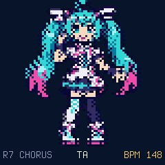
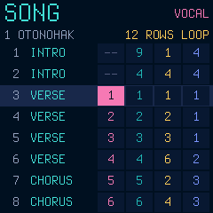
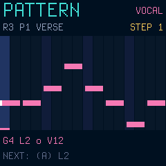
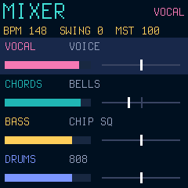
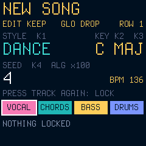

SINGING SONGWRITER · M-VAVE FM-1 · VERSION {{VERSION}}
Miku-FM.
A tiny singer lives in your FM-1.
She sings your songs in Japanese, with FM chords, bass and drums. Write them step by step, or let her dream one up.
01 / ON STAGE
Six screens, one little star.
Native firmware renders: the real package running in the emulator, unchanged.





02 / PLAY IT HERE
Your FM-1, in the browser.
This is the firmware package itself, emulated by fm1-emu. Click it, then:
- PLAY: she sings the demo 「おとのはこ」. HOME steps through STAGE, DANCE, SONG, PATTERN, MIXER and GEN.
- FX · SCL · ENV · LFO pick the track (vocal, chords, bass, drums); the keys play it. On PATTERN a key writes the step.
- On GEN: knob 1 the style, 2 the key, 3 major or minor, 4 the seed; REC writes a new song, PLAY plays it.
03 / THE TRAILER
Meet her.
Every screen and every sound in it is the firmware running in the emulator; nothing is mocked up.
04 / LISTEN
Songs she sings.
Rendered on a computer by the same C engine that runs in the FM-1's audio interrupt.
05 / WHAT SHE CAN DO
A whole little studio.
She really sings.
A formant voice, synthesised live: five vowels, 70 Japanese morae with their consonants, vibrato, glides, breath. No samples.
Four tracks, one song.
Vocal, FM chords (8 sounds), bass (4), drums (2 kits). 16 patterns per track, 64 rows with sections, swing, undo, 8 song slots.
Dream one up.
POP, BALLAD, DANCE or CHIP in any key. Lock what you like, regenerate the rest, or ask for a new phrase. Keep it or drop it.
She is on stage.
A pixel face that mouths every vowel, and a full-body dancer that moves to your song.
VERSION {{VERSION}} / INSTALL WITH CARE
Bring her home.
{{BUILD}}
SHA-256 {{SHA256}}
Miku-FM has not been tested on a physical FM-1 yet. Install it only if you are ready to use the USB rescue: hold OCT− while switching on. The installer needs Chrome or Edge (Web MIDI) and a USB data cable. It can also take you back to the official V15.
Miku-FM does not read other firmwares' projects or samples, and saving replaces the settings other Felucca-family firmwares keep. Back up first. Install and recovery guide ↗ · What has been measured ↗
WITH GRATITUDE / OUR ROOTS
Built on generous work.
Miku-FM runs on Dinghy, the FM-1 firmware platform (GPL-3.0-only), from the Felucca family by Leo Kuroshita (Hügelton Instruments), whose web installer this site uses. The emulator is fm1-emu by Joakim Eriksson (MIT).